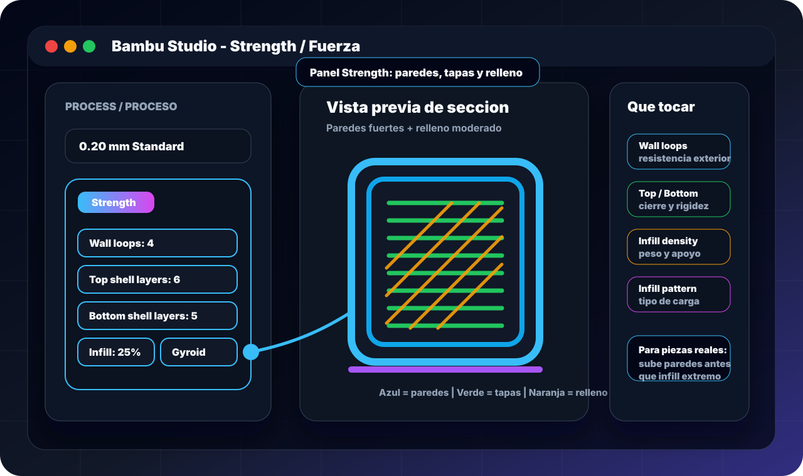

Idea clave
El relleno ocupa el interior de la pieza. Sirve para sostener capas superiores, repartir cargas y controlar peso, pero no sustituye un buen diseño. Si una pieza se rompe por las capas, aumentar infill puede no arreglar nada.
Para piezas funcionales suele funcionar mejor empezar con paredes suficientes, buena orientación y un porcentaje moderado. Después se ajusta el patrón según el tipo de esfuerzo.
Panel Strength/Fuerza: paredes, tapas y relleno
En Bambu Studio, OrcaSlicer y slicers parecidos, la zona Strength/Fuerza agrupa casi todo lo que define la resistencia de una pieza: paredes, capas superiores e inferiores, densidad de relleno y patrón de relleno. Es el panel que debes mirar cuando una pieza se rompe, pesa demasiado o tiene la parte superior con huecos.

Wall loops / Paredes
Controla cuántas paredes rodean la pieza. Es uno de los ajustes más importantes para resistencia real, roscas, agujeros, esquinas e inserts.
Valor base: 2 para decorativo, 3 para uso general, 4-6 para piezas funcionales.
Top shell layers / Capas superiores
Son las capas sólidas que cierran la parte de arriba. Si salen huecos o se marca el relleno, necesitas más capas superiores, más apoyo de infill o menos velocidad.
Valor base: 4-5 normal, 6-8 si quieres superficie fuerte o muy limpia.
Bottom shell layers / Capas inferiores
Cierran la base y ayudan a que la pieza tenga rigidez desde abajo. También influyen en el acabado de la primera cara visible si imprimes sobre placa texturizada o lisa.
Valor base: 4-5 normal, más si la base soporta tornillos o carga.
Infill density / Densidad
Define cuánto relleno interno hay. No lo subas al 80-100% por costumbre: suele ser más eficiente subir paredes y elegir bien la orientación.
Valor base: 8-12% decorativo, 15-25% general, 25-40% funcional.
| Campo | Qué cambia | Cuándo subirlo | Cuándo no tocarlo tanto |
|---|---|---|---|
| Wall loops | Grosor de carcasa y resistencia exterior | Piezas con tornillos, golpes, presión, agujeros o inserts | Si solo necesitas soporte para tapas, mejor sube infill moderadamente |
| Top shell layers | Cierre superior y acabado | Top layer con huecos, infill marcado, superficie débil | Si el problema es subextrusión o flujo mal calibrado |
| Bottom shell layers | Cierre inferior y rigidez de base | Base funcional, piezas atornilladas, piezas que apoyan peso | Si solo buscas ahorrar tiempo en una pieza visual |
| Sparse infill density | Peso, material y apoyo interno | Cargas repartidas, tapas grandes, piezas que no deben flexar | Si la pieza rompe por capas: ahí manda orientación y material |
| Sparse infill pattern | Dirección y forma del soporte interno | Gyroid/cubic para funcional; grid/lines para rápido; concentric para flexible | No cambies patrón para arreglar mala primera capa o mala temperatura |
Regla práctica: para una pieza funcional empieza con 4 paredes, 5-6 capas superiores, 4-5 inferiores, 20-30% gyroid o cubic y orientación correcta. Después ajusta según dónde falle la pieza.
Tipos de relleno
Los nombres cambian un poco entre Cura, PrusaSlicer, OrcaSlicer y Bambu Studio, pero la lógica es parecida: algunos patrones son rápidos, otros reparten mejor fuerzas y otros dejan mejor superficie superior.
Grid / Rectilinear
Rápido, sencillo y suficiente para piezas normales. Buena opción por defecto para prototipos, soportes internos y piezas sin cargas complejas.
Úsalo en: carcasas, pruebas, piezas grandes sin mucha exigencia.
Gyroid
Relleno continuo en 3D, reparte fuerzas en varias direcciones y no cruza líneas en la misma capa como otros patrones. Suele ser excelente para piezas funcionales.
Úsalo en: soportes, piezas sometidas a torsión, agarres y piezas de uso real.
Cubic / Adaptive cubic
Buena rigidez tridimensional. Adaptive cubic ahorra material concentrando relleno donde hace más falta.
Úsalo en: piezas resistentes, volumen grande y componentes que reciben carga desde varias direcciones.
Triangles
Patrón rígido y estable. Puede consumir más tiempo y transmitir vibración, pero funciona bien si quieres rigidez en plano.
Úsalo en: escuadras, soportes planos, piezas que no deben flexar.
Lines
Muy rápido y ligero. Resiste mejor en una dirección que en otra, así que no es la mejor elección para cargas impredecibles.
Úsalo en: piezas visuales, maquetas, borradores y objetos grandes sin esfuerzo.
Concentric
Sigue el contorno de la pieza. Da buen acabado en formas flexibles y puede ayudar en piezas que deben deformarse sin crear una malla rígida interna.
Úsalo en: TPU, jarrones gruesos, tapas flexibles y piezas decorativas.
Qué usar en cada caso
| Caso | Patrón recomendado | Infill | Paredes | Notas |
|---|---|---|---|---|
| Figura decorativa | Lines o grid | 5-12% | 2 | Prioriza acabado y tiempo. |
| Caja o carcasa | Grid o gyroid | 10-20% | 3 | Las paredes importan más que el relleno. |
| Soporte funcional | Gyroid o cubic | 25-40% | 4-5 | Orienta la pieza para que la carga no separe capas. |
| Pieza con tornillos | Cubic | 25-50% | 4-6 | Aumenta paredes alrededor de agujeros e inserts. |
| TPU flexible | Concentric o gyroid | 5-20% | 2-3 | Menos infill = más flexibilidad. |
| Pieza muy pesada | Adaptive cubic | 8-20% | 3-4 | Ahorra material sin dejar tapas sin soporte. |
Pared gruesa, tapas y resistencia real
Paredes o perímetros
Son las líneas exteriores. Para piezas funcionales, pasar de 2 a 4 paredes suele mejorar más que subir mucho el infill. Con boquilla de 0.4 mm, 3 paredes son aproximadamente 1.2 mm de shell.
Capas superiores e inferiores
Evitan huecos visibles y dan rigidez a superficies planas. Si el top layer sale con agujeros, sube tapas, baja velocidad superior o aumenta ligeramente infill.
Orientación
La pieza es más débil entre capas. Si una pestaña trabaja como palanca, intenta que la fuerza vaya a lo largo de las líneas, no separando capas.
Material
PLA es rígido pero puede partir. PETG aguanta mejor golpes. ASA/ABS toleran temperatura. Nylon o compuestos técnicos necesitan secado y perfil serio.
Reglas rápidas
- No uses 100% infill por defecto: puede crear tensiones, gastar material y empeorar acabado.
- Para resistencia, prueba primero 4 paredes, 25-35% gyroid/cubic y orientación correcta.
- Para ahorrar tiempo, baja infill antes que paredes si la pieza necesita buena carcasa exterior.
- Para agujeros y tornillos, aumenta perímetros y usa chaflán de entrada.
- Para piezas grandes, adaptive cubic o grid bajo suele ser mejor que una pieza maciza.